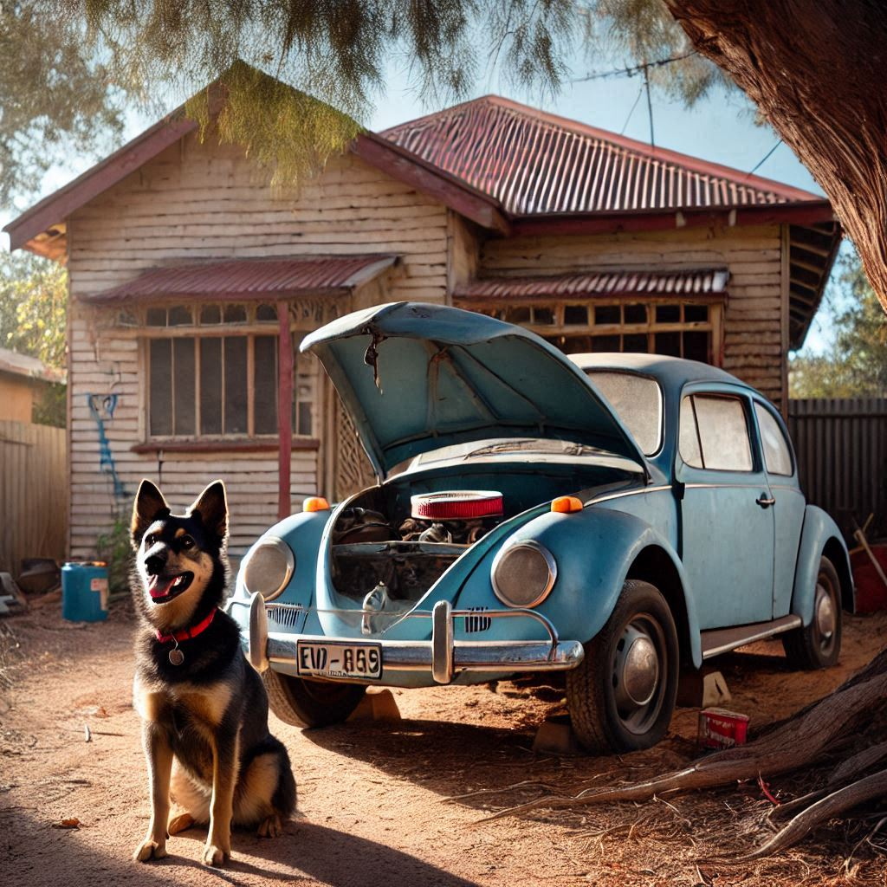

Create a photographic scene capturing the (rear) view of a dusty cobalt-blue 1961 Type 1 Volkswagen Beetle, emphasizing the vintage charm of its open (rear) engine compartment. In the foreground, place a black and brown German Shepherd-cross dog with a red collar, sitting attentively on the sunlit dirt driveway in front of the car and facing the viewer. The background features a typical Perth weatherboard bungalow on stumps. It is a very simple structure, ramshackle and falling into disrepair. Climbing plants cover the house, and shrubs surround it creating a unkempt look. An over-weight barefoot woman stands on the veranda of the house in baggy shorts and a loose white crop-top. The scene is reminiscent of white trash suburbs of Perth. The yard is full of half-dead plants and is scattered with various rubbish and tools. The sunlight casts gentle shadows, enhancing the casual and warm feeling of the image. The overall scene combines elements of automotive mechanics and the endearing presence of a pet, creating a picturesque and nostalgic moment.
